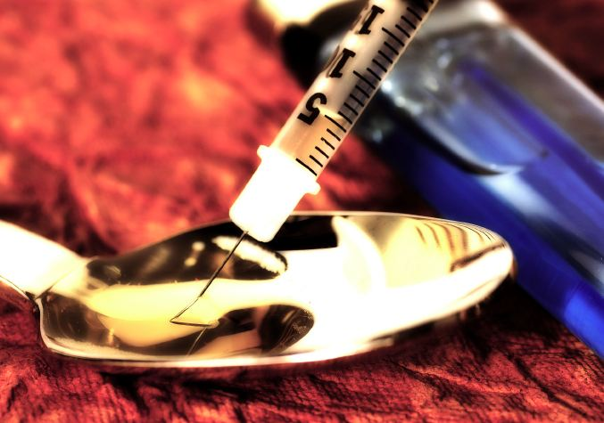

Toast to Topiramate
Epilepsy drug turned addiction-breaker
Michelle Shum
Fall 2005

For years, medical science has searched exhaustively for a drug that
could aid patients in breaking substance addictions. Could this drug
have been in our hands all along? Topiramate, known commercially as
Topamax®, has been used for years as an anti-seizure medication.
Recently, however, researchers at the University of Texas have
discovered that topiramate can potentially boost the odds of overcoming
alcohol dependence. Neurobiologists across the nation have subsequently
caught onto this phenomenon, uncovering a wide array of applications
for topiramate in the realm of addiction treatment.
The Archives of General Psychiatry first published
findings from the University of Texas Health Science Center in 2004,
which reported that topiramate is “increasing overall well-being and
quality of life and lessening dependence severity and its harmful
consequences.” Alcoholics who used oral topiramate were six times more
likely than those who took placebos to abstain from alcohol for three
months. A third of the treated patients shifted from heavy drinking to
moderate consumption, and nearly one in five stopped drinking
altogether.
As a result of this hopeful prognosis,
neuroscientists have expanded current research of topiramate for a
broad spectrum of addictions in the hopes that it will act as a single
“cure-all” drug. Topiramate may reduce cravings by working in two ways.
First, it inhibits the release of glutamate, an excitatory
neurotransmitter that normally facilitates dopaminergic neuron systems,
which have been traditionally implicated in driving addictions. Second,
it promotes the release of gamma-aminobutyric acid, an inhibitory
neurotransmitter that impedes neuronal excitation via membrane
hyperpolarization. Clinical trials of topiramate have thus far proven
successful in the battle against cocaine dependence. The Department of
Psychiatric Medicine at the University of Virginia has proposed that
topiramate’s principal mechanism of action involves decreasing the
sensitivity of neurons to cocaine.
Since the side effects of topiramate – which include
drowsiness, difficulty articulating words, impaired memory and
concentration, and weight loss – are relatively minor, topiramate may
be an ideal candidate for treating substance addictions. While it is
far too soon to call topiramate the miracle drug that scientists have
long searched for, its glutamate-inhibiting activity presents a
promising new avenue for achieving freedom from chemical dependence.